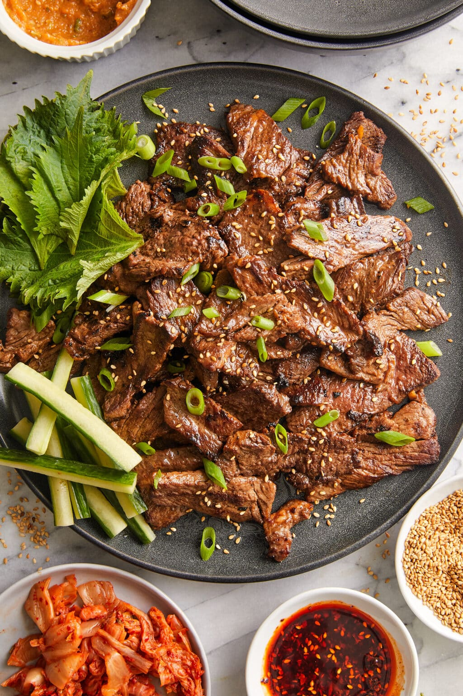

Korean Beef Bulgog
A super easy recipe for Korean BBQ with the most flavorful marinade! T
he thin, tender slices of meat cook SO quickly!

Ingredients
- 1 ½ pounds boneless rib eye steak
- ½ small pear, peeled and coarsely grated
- ¼ cup reduced sodium soy sauce
- 2 tablespoons brown sugar
- 2 tablespoons toasted sesame oil
- 3 cloves garlic, minced
- 1 tablespoon freshly grated ginger
- 1 tablespoon gochujang, Korean red pepper paste
- 2 tablespoons vegetable oil, divided
- 2 green onions, thinly sliced
- 1 teaspoon thinly sliced sesame seeds
Instructions
- Wrap steak in plastic wrap, and place in the freezer for 30 minutes. Unwrap and slice across the grain into 1/4-inch thick slices.
- In a medium bowl,
combine pear, soy sauce,
brown sugar, sesame oil,
garlic, ginger and gochujang.
In a gallon size Ziploc bag,
combine soy sauce mixture and steak; marinate for at least 2 hours to overnight, turning the bag occasionally.
- Heat 1 tablespoon vegetable oil in a cast iron grill pan over medium-high heat.* Working in batches, add steak to the grill pan in a single layer and cook, flipping once, until charred and cooked through, about 2-3 minutes per side. Repeat with remaining 1 tablespoon vegetable oil and steak.
- Serve immediately, garnished with green onions and sesame seeds, if desired.